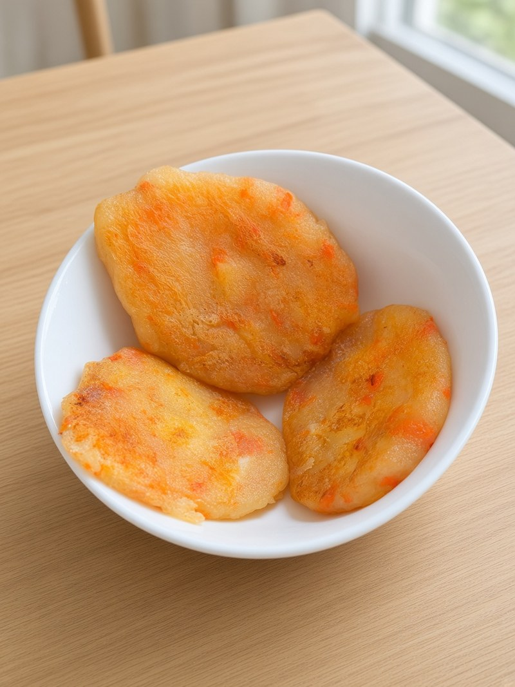
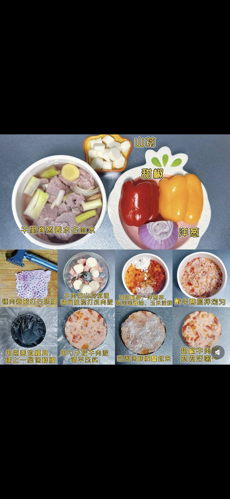

早餐
鸡蛋水饼 + 山药玉米糊糊【已吃】
碳水 面粉 + 米 + 玉米 + 山药蛋白 全蛋脂肪 少量油
食材
- 鸡蛋 1 个（全蛋）
- 面粉少量 + 温水适量
- 少量油；不加盐糖
- 大米或小米约 10–12g
- 玉米粒适量
- 山药约 15–20g，去皮切小块
做法
- 全蛋打散加温水、面粉调稀糊，少油小火摊薄水饼，两面熟透，切条。
- 米与山药加水煮软，下玉米再煮片刻，压碎打细成糊，调稀。
- 不加盐糖。
【已吃】水饼须熟透；糊可压碎调稀。
午餐
清蒸比目鱼 + 清蒸时蔬 + 软饭约 20–25g【已定】
碳水 软饭约 20–25g蔬菜 时蔬（清蒸）蛋白 比目鱼约 40–50g脂肪 辅食油合计约 5g
食材
- 比目鱼约 40–50g，去刺确认
- 姜片；不加盐、酱油、生抽
- 时蔬适量（如西兰花/小青菜/胡萝卜等），切小
- 软米约 20–25g（生米）
做法
- 比目鱼放姜片清蒸至全熟易碎，仔细剔刺。
- 时蔬同蒸或另蒸至软，切小同餐。
- 配软饭：生米约 20–25g 煮软；整餐辅食油合计约 5g（不足再补足，勿另加一份 5g）。
- 不加盐、酱油、生抽。鱼虾只午餐。
【已定】比目鱼刺务必剔净；软饭生米约 20–25g；辅食油合计约 5g。
下午餐
蓝莓馒头 + 宝宝酸奶【已吃】
碳水 小馒头水果 蓝莓蛋白 宝宝酸奶脂肪 —
食材
- 小馒头 1–2 个
- 蓝莓适量，洗净压碎或切半（可拌馒头或同餐）
- 宝宝酸奶一小份
做法
- 小馒头撕小块；蓝莓洗净压碎或切半同餐。
- 配宝宝酸奶一小份。
- 不加盐糖。
【已吃】蓝莓可压碎防呛；市售馒头看配料，含盐含糖不选。
早餐
百合雪梨粥
碳水 米/小米水果 雪梨蛋白 —脂肪 —
食材
- 大米或小米约 10–12g
- 雪梨适量，去皮去核切小块
- 鲜百合少量，撕瓣
做法
- 米加水煮至软烂，下雪梨块同煮软。
- 百合蒸软压碎拌入；可压碎调稀成粥。
- 不加盐糖。
百合蒸软压碎；不加糖。
午餐
平菇肉末豆腐 + 清炒青菜 + 软饭约 20–25g
碳水 软饭约 20–25g蔬菜 平菇 + 青菜蛋白 猪肉末 + 嫩豆腐脂肪 辅食油合计约 5g
食材
- 猪肉末约 40–45g
- 平菇适量，切细丁/薄片
- 嫩豆腐约 30g，切小丁
- 辅食油合计约 5g（含炒用油）；不加盐、酱油、生抽
- 青菜适量（如小油菜/油麦菜）
- 软米约 20–25g（生米）
做法
- 少油下猪肉末炒至全熟变色无粉红；下平菇丁煮/炒至软透，再下豆腐丁轻轻翻匀。
- 青菜少油清炒或焯至软，切小。
- 配软饭：生米约 20–25g 煮软；整餐辅食油合计约 5g（含炒用油；不足再补足，勿另加一份 5g）。
- 不加盐酱油生抽。
肉末全熟；平菇切细煮软。软饭生米约 20–25g。
下午餐
时蔬奶酪燕麦烘蛋（加 30ml 鲜奶；鲜奶首试）
碳水 燕麦蔬菜 时蔬丁蛋白 全蛋 + 奶酪半块脂肪 鲜奶 30ml（首试）
食材
- 鸡蛋 1 个
- 即食燕麦约 8–10g
- 奶酪半块切碎
- 时蔬丁（胡萝卜/西兰花/菠菜等）适量焯软
- 鲜奶约 30ml（本周首试，单独观察）
- 不加盐
做法
- 蛋打散，拌入燕麦、奶酪碎、时蔬丁与鲜奶约 30ml。
- 倒入耐烤模具，烤箱/空气炸烤至表面凝固、中心全熟。
- 放温切小块；不加盐糖酱油。
鲜奶首试：本餐加约 30ml 鲜奶，单独引入，观察 2–3 天内皮疹、呕吐、腹泻；不适即停并就医。中心无流心再喂；奶酪半块。
周三 10.28
香蕉鸡蛋饼 · 平菇虾仁蝴蝶面 · 猪肉馄饨
早餐
香蕉鸡蛋饼 + 黑芝麻核桃米糊
碳水 面粉 + 米水果 香蕉蛋白 全蛋脂肪 黑芝麻 + 核桃 + 少量油
食材
- 香蕉适量压泥
- 鸡蛋 1 个（全蛋）
- 面粉少量 + 少量油；不加盐糖
- 大米或小米约 10–12g
- 熟黑芝麻碾碎少许
- 核桃少量
做法
- 全蛋打散，加香蕉泥、少量面粉调成糊，少油小火摊成小饼，两面煎熟，切条。
- 米煮软，加黑芝麻与核桃打成细糊，调稀；芝麻核桃须碾细防呛。
- 不加盐糖。
香蕉鸡蛋饼用全蛋；糊要细、无颗粒。
午餐
平菇虾仁蝴蝶面 + 蒸手指胡萝卜
碳水 蝴蝶面蔬菜 平菇 + 胡萝卜蛋白 鲜虾仁脂肪 辅食油合计约 5g
食材
- 鲜虾仁约 35–40g，去虾线切小
- 平菇适量，切细丁
- 蝴蝶面适量煮软
- 辅食油合计约 5g（含炒用油）；不加盐、酱油、生抽
- 胡萝卜约 30–40g，去皮切手指条
做法
- 少油下平菇丁炒/煮软，下虾仁炒至全熟变色，拌入煮软蝴蝶面；整餐辅食油合计约 5g（含炒用油；不足再补足，勿另加一份 5g）。
- 胡萝卜切手指条，蒸 10–15 分钟至手指可压碎，作手抓。
- 不加盐酱油生抽；虾务必全熟。鱼虾只午餐。
虾全熟；胡萝卜蒸软作手指食物。不加盐酱油。
下午餐
猪肉馄饨 + 小青菜
碳水 馄饨皮蔬菜 小青菜蛋白 猪肉馅馄饨脂肪 少量
食材
- 猪肉馄饨（小区宝宝「小米粥」的外婆送来的，不是咱家外婆；个数按蕉蕉食量）
- 小青菜约 25–30g
- 清水；汤里不加盐/酱油/紫菜虾皮
做法
- 馄饨下开水，浮起后再煮 2–3 分钟，切开确认全熟；若送来已熟则加热透心即可。
- 小青菜焯软切碎。
- 汤底清水，不加盐酱油生抽。若不确定馅料是否含盐，少给并观察。
来源：小区宝宝「小米粥」的外婆送来（不是咱家外婆）。切开确认全熟；汤底无盐。
早餐
苹果山药胡萝卜小黄米粥 + 水煮蛋
碳水 小黄米 + 山药蔬果 苹果 + 胡萝卜蛋白 全蛋脂肪 —
食材
- 小黄米约 10–12g
- 苹果约 20g，去皮去核切小块
- 山药约 15–20g，去皮切小块
- 胡萝卜约 15–20g，去皮切小块
- 鸡蛋 1 个（全蛋水煮）
做法
- 小黄米、苹果、山药、胡萝卜加水煮至软烂，压碎打细成粥/糊；不加盐糖。
- 水煮蛋至全熟，可切小块或捣碎同餐。
粥/糊须软烂；蛋全熟。不加盐糖。
午餐
番茄土豆炖牛尾骨汤 + 米饭（生米约 20–25g）
碳水 软饭约 20–25g + 土豆蔬菜 番茄 + 土豆蛋白 牛尾（软烂剔骨）脂肪 汤油 + 辅食油合计约 5g
食材
- 牛尾骨适量（可先泡水解冻）
- 番茄适量，去皮切碎
- 土豆适量，切小丁
- 姜片；清水；不加盐、酱油、生抽
- 软米约 20–25g（生米）
做法
- 牛尾骨泡水焯烫；番茄少油炒出汁，与牛尾、姜片加水小火炖至牛尾软烂。
- 下土豆丁再炖至软透；肉剔骨后撕碎/切小。整餐辅食油合计约 5g（含汤油；不足再补足，勿另加一份 5g）。
- 配软饭（生米约 20–25g 煮成）；汤可少许拌饭。
- 汤底不加盐酱油生抽。
牛尾务必软烂剔骨再喂；汤底无盐。软饭生米约 20–25g。
下午餐
奶酪土豆饼（奶酪半块）
碳水 土豆 + 少量面粉蛋白 蛋黄 + 奶酪半块脂肪 少量油
食材
- 土豆适量，蒸软压泥
- 蛋黄 1 个（或全蛋，按食量）
- 奶酪半块，切碎
- 面粉少量、葱花少许
- 少量油；不加盐
做法
- 土豆蒸软压泥，加蛋黄、奶酪碎（半块）、面粉、葱花拌匀成稠糊。
- 少油小火摊成小饼，两面煎熟，切条手抓。
- 不加盐、酱油、生抽。

奶酪一般半块；本周奶酪土豆饼仅此一次（每周一次）。
周五 10.30
鸡蛋饼 · 彩椒牛肉饼 · 南瓜小馒头
早餐
鸡蛋饼 + 豆浆 + 圣女果
碳水 少量面粉水果 圣女果蛋白 全蛋 + 豆浆脂肪 少量油
食材
- 鸡蛋 1 个（全蛋）
- 面粉少量 + 温水适量
- 少量油；不加盐糖
- 原味豆浆小半杯（约 60–80ml；自打须煮透）
- 圣女果适量，洗净去蒂，对半或切小
做法
- 全蛋打散加温水、面粉调稀糊，少油小火摊成小饼，两面熟透，切条。
- 豆浆放温后给小半杯；自打须煮沸后再小火煮透；不加糖。
- 圣女果洗净去蒂，对半或切小同餐（防呛）。
豆浆不替代配方奶；圣女果切小防呛。不加盐糖。
午餐
彩椒牛肉饼 + 软饭约 20–25g + 清蒸小青菜
碳水 软饭约 20–25g蔬菜 彩椒 + 小青菜蛋白 牛肉馅约 40–50g脂肪 辅食油合计约 5g
食材
- 牛肉馅约 40–50g
- 彩椒适量，切碎/擦丝
- 玉米淀粉少许（可按小红书步骤，用于上劲/定型）
- 辅食油合计约 5g（含煎用油）；不加盐、酱油、生抽、糖、宝宝酱油
- 软米约 20–25g（生米）
- 小青菜适量
做法
- 牛肉馅与彩椒碎、玉米淀粉少许搅匀上劲（可参照小红书步骤，但全程不加盐糖酱油/生抽/宝宝酱油）。
- 压成小饼，少油小火两面煎至全熟（切开无粉红）；整餐辅食油合计约 5g（含煎用油；不足再补足，勿另加一份 5g）。
- 配软饭：生米约 20–25g 煮软。
- 小青菜蒸/焯至软，切小同餐。

做法步骤参考图（图源小红书）；用量以上面蕉蕉分量为准，不加盐糖酱油。跟小红书步骤，但不加宝宝酱油/任何酱油生抽盐糖；可用玉米淀粉；牛肉务必全熟。软饭生米约 20–25g。
下午餐
南瓜小馒头 + 蔬菜（待定）
碳水 小馒头蔬果 南瓜（馒头内）+ 蔬菜待定蛋白 —脂肪 —
食材
- 南瓜小馒头 1–2 个（可买成品或家做；看配料无盐无糖）
- 蔬菜（待定）
做法
- 小馒头撕小块手抓；可略蒸热。
- 配菜蔬菜待定，届时蒸/焯软切小同餐。
- 不加盐糖。
蔬菜待定；市售馒头看配料，含盐含糖不选。
早餐
红薯杂粮粥 + 水煮蛋 + 蒸胡萝卜
碳水 杂粮 + 红薯蔬菜 胡萝卜蛋白 全蛋脂肪 —
食材
- 小米/大米/燕麦等杂粮适量
- 红薯适量，蒸软压泥或切小丁
- 鸡蛋 1 个（全蛋水煮）
- 胡萝卜约 30–40g，去皮切条或小块
做法
- 杂粮加水煮至软烂，拌入蒸软红薯泥/丁成粥；不加盐糖。
- 水煮蛋至全熟，可切小块同餐。
- 胡萝卜蒸 10–15 分钟至手指可压碎，切手抓条或压碎勺喂。
红薯、胡萝卜均须软透；蛋全熟。不加盐糖。
午餐
奶酪时蔬三文鱼烩饭（三文鱼约 40–50g，奶酪半块拌入，生米约 20–25g）
碳水 软饭约 20–25g蔬菜 时蔬（胡萝卜/西兰花/玉米等）蛋白 三文鱼约 40–50g + 奶酪半块脂肪 DHA + 辅食油合计约 5g
食材
- 三文鱼约 40–50g，去皮去刺切小丁
- 软米约 20–25g（生米）
- 时蔬丁（胡萝卜、西兰花、玉米等）适量
- 奶酪半块，切碎拌入
- 辅食油合计约 5g（含炒用油）；不加盐、任何调味
做法
- 少油下三文鱼丁炒至全熟变色，下时蔬丁翻软。
- 先按生米约 20–25g 煮成软饭，再与鱼蔬轻轻烩匀，拌入奶酪半块；整餐辅食油合计约 5g（含炒用油；不足再补足，勿另加一份 5g）。
- 仔细确认无刺；不加盐、酱油、生抽。
三文鱼必须全熟去刺（去皮去刺）；奶酪半块拌入；生米约 20–25g，辅食油合计约 5g。鱼虾只午餐。
下午餐
牛肉小馄饨 + 青菜（自包无盐）
碳水 馄饨皮蔬菜 青菜蛋白 牛肉馅（无盐自包）脂肪 少量
食材
- 牛肉馅无盐自包（个数按蕉蕉食量）
- 青菜约 25–30g（小油菜/小青菜等）
- 清水；汤里不加盐/酱油/紫菜虾皮
做法
- 自包牛肉小馄饨下开水，浮起后再煮 2–3 分钟，切开确认全熟。
- 青菜焯软切碎。
- 全程不加盐、酱油、生抽。市售含盐馄饨不选。
自包无盐，个数按食量；下午可红肉。
周日 11.01
牛奶蛋花燕麦粥 · 西葫芦蒸牛肉 · 下午待定
早餐
牛奶蛋花燕麦粥 + 蓝莓
碳水 燕麦水果 蓝莓蛋白 蛋花 + 配方奶/牛奶脂肪 —
食材
- 即食燕麦约 10–12g
- 配方奶或牛奶适量（约 80–100ml，煮粥用；非替代奶瓶两顿）
- 鸡蛋约 1/2–1 个，打散淋蛋花
- 蓝莓适量，洗净压碎或切半
做法
- 燕麦加水或少量配方奶煮软，边搅边淋入蛋液成蛋花，再补适量配方奶/牛奶调成粥；蛋须全熟。
- 蓝莓洗净压碎或切半同餐。
- 不加盐糖。奶瓶两顿照常，本餐用奶不计入替代。
蛋花须全熟；蓝莓可压碎。早餐用奶不替代奶瓶约 420ml。
午餐
西葫芦蒸牛肉 + 米饭（生米约 20–25g）
碳水 软饭约 20–25g蔬菜 西葫芦蛋白 牛肉约 40–50g脂肪 辅食油合计约 5g
食材
- 牛肉约 40–50g（馅或薄片/小丁）
- 西葫芦适量，去皮切薄片或小丁
- 姜片少许；辅食油合计约 5g；不加盐、酱油、生抽
- 软米约 20–25g（生米）
做法
- 牛肉与西葫芦分层或拌匀，可少许辅食油，上锅蒸至牛肉全熟无粉红、西葫芦软透；切小适合约 11 月龄。
- 配软饭：生米约 20–25g 煮软；整餐辅食油合计约 5g（不足再补足，勿另加一份 5g）。
- 不加盐酱油生抽。
牛肉务必全熟；西葫芦蒸软。软饭生米约 20–25g。
下午餐
待定
碳水 待定蔬菜 待定蛋白 待定脂肪 —
周日下午餐待定。